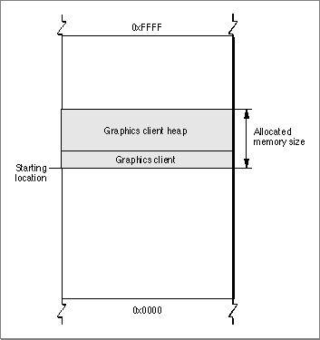

Legacy Document
Important: The information in this document is obsolete and should not be used for new development.
Important: The information in this document is obsolete and should not be used for new development.


Specifying the Starting Location of a Graphics Client
If you use theGXNewGraphicsClientfunction to specify the starting location of a new graphics client, you must also specify the requested size of the graphics client heap. In this case, the size in bytes of the graphics client heap requested is used for a contiguous block of memory for both the graphics client and heap. In all other cases, the graphics client heap is allocated as a discontiguous memory block and the entire memory allocation requested by specifying amemoryLengthparameter for theGXNewGraphicsClientfunction is assigned to the new graphics client heap.Use the
GXNewGraphicsClientfunction if you need to create a graphics client without allocating any memory. This allows you to draw at interrupt time. For example, you may want to reportout_of_memoryerrors in a dialog box.Listing 2-4 demonstrates how to specify a memory size and a memory starting location for a graphics client and its heap.
Listing 2-4 Specifying the starting location and size for a graphics client and its heap
gxGraphicsClient newClient; char memoryBuffer[10000] newClient = GXNewGraphicsClient(&memoryBuffer[0], sizeof (memoryBuffer), gxNoAttributes); // After we attempted to create the graphics client, we need // to determine if the call succeeded.If it did not ( as in the // case for all GX functions), "newClient" will be nil. If it // is, we alert the user to the problem. Otherwise, we attempt // to allocate the GX heap. if (newClient) GXEnterGraphics(); // Calling GXEnterGraphics allocates the memory within the GX // heap. The only reason the call would not succeed is if // there is not enough memory. In this case, the graphics // error which is posted is -27999 (out of memory). At this // point, we have not installed an error handler, so we check // for the error number corresponding to the out-of-memory // error. if ( GXGetGraphicsError( nil ) == -27999 ) { // Because we canot allocate the requested size for our GX // heap, we need to throw away the client we created and alert // the user that there is not enough memory to continue.. // GXDisposeGraphicsClient(newClient); >>application code to alert user and shut down app } else { >>application code to alert user and shut down app }}ThemyClientvariable holds the new graphics client. You can use this variable to access the graphics client any time you need it. The combined size of the graphics client and the graphics client heap is 10 KB and its starting location in memory is at the starting location of the buffer. Since the memory starting location is specified, the new graphics client and its heap use contiguous memory, as shown in Figure 2-1.Figure 2-1 Creating a graphics client by specifying the memory starting location
